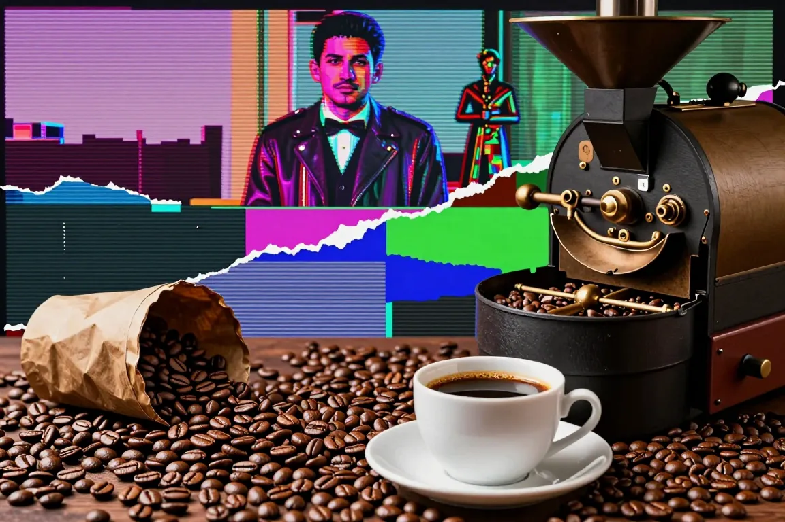

Et klipp i løkke med revne bånd, delte fargekanaler og gjentatte bilder, som om signalet sviktet. Kunstnere på Tumblr og i nettkunstmiljøer gjorde det vanlig etter 2010.

Kjerneidé
En feil i signalet er et bilde: vis feilen og ikke skjul den.
Designprinsipper
Forskyv den røde kanalen 3px til venstre og den blå kanalen 3px til høyre i hvert glitch-bilde.
Skjær 3 til 8 vannrette bånd på 4px til 40px høyde og flytt hvert til siden med 10px til 60px.
Kjør glitchen i støt på 2 til 6 bilder inne i en løkke på 20 til 40 bilder ved 12 bps.
Hold 60 % av bildene rene, slik at feilen leses som en feil.
Begrens paletten til 64 farger og la rastreringen synes.
Sett tekst som en monolinje på 14px med 2 forskjøvne duplikater i rødt og cyan ved 40 % dekning.
Legg et skannelinjelag av 2px striper ved 8 % dekning over bildet.